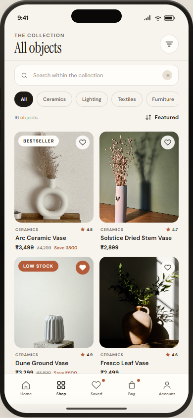
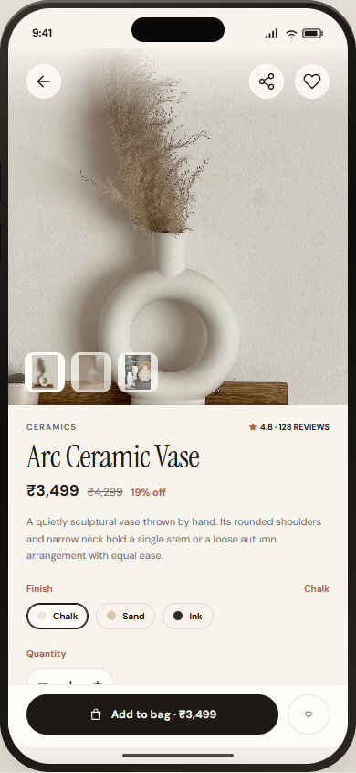
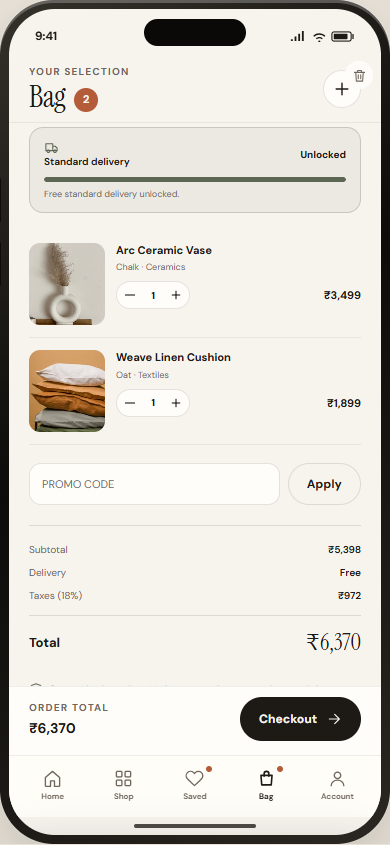
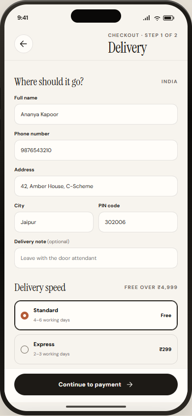
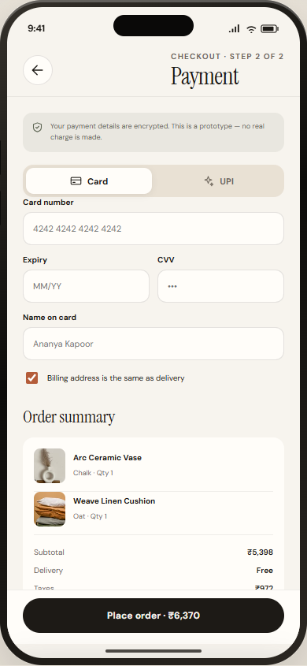

Problem
Shopping apps often make simple purchases feel complicated: unclear costs, noisy catalogues, repetitive forms and no easy way back to a product you already trusted.
Task 05 · Advanced · UI/UX case study
FORMA is a premium home-objects store designed around a simple belief: a good shop should reduce effort, not add theatre. This case study walks through the research, product design, interaction decisions and usability evaluation behind a complete 12-screen mobile commerce prototype.
Design a complete e-commerce application with an optimized shopping experience.
Shopping apps often make simple purchases feel complicated: unclear costs, noisy catalogues, repetitive forms and no easy way back to a product you already trusted.
End-to-end UX and UI: research synthesis, journeys, wireframes, product catalog, cart and checkout design, clickable prototype and task-based usability evaluation.
Static, self-contained deliverable; no backend; mobile-first 390 × 844 canvas; real product imagery; prototype state persisted locally in the browser.
Plain labels, visible totals and predictable states.
Five categories, focused filters and a short spec list.
Save, revisit and reorder instead of forcing a decision.
Every screen leads to a single obvious primary action.
Step 2 — help a shopper compare quickly, then build confidence in one object.


Image-led cards carry category, rating, price and saving in a consistent hierarchy. A sticky tool area keeps search, category and sort available while the grid scrolls.
Price, rating and availability live in a bottom sheet. The active chip state, result count and “Show N objects” action make the consequence of a filter explicit before it is applied.
Beside the imagery, the detail screen answers: what is it made of, how big is it, how do I care for it and when does it arrive? Variants and quantity sit directly above the add-to-bag action.
Search matches names, categories, materials and tags, so “linen”, “oak” or “vase” all return useful results. Recent and trending terms remove the blank-page problem.
Step 3 — make the cost, commitment and delivery expectation obvious at every point.



Line items, quantity steppers and removal are direct. The free-shipping bar turns an abstract threshold into a visible goal. Applying FORMA10 immediately shows the discount row and recalculates tax.
Address fields are prefilled for the demo but fully editable. Standard, express and same-day options update the total live. Required fields and formats are checked inline with specific messages.
Card and UPI are the two focused choices. The final total is repeated beside the place-order button, along with a clear note that this is a prototype and no real charge is made.
The success screen gives an order ID, payment method, delivery estimate and total, then offers a direct “Track your order” action instead of ending the journey.
Subtotal → discount → delivery → tax → grand total is shown in the bag and repeated at both checkout steps.
Step 4 — a clickable, persistent build rather than a set of static mockups.
Discover → listing → product → bag → delivery → payment → confirmation.
Run in prototype →Search → live results → product → save → saved items → move to bag.
Run in prototype →Account → orders → order detail → reorder → bag.
Run in prototype →Selecting a journey in the left rail reveals a coach above the phone. The coach advances as the shopper reaches the next screen or completes the relevant action, making the prototype useful for both demonstration and testing.
Step 5 — task-based evaluation plus heuristic review of the clickable build.
The evaluation combined a task-based walkthrough of five realistic shopping scenarios with a heuristic review of clarity, feedback, error prevention and user control. The goal was directional evidence: could a shopper complete core tasks without confusion, and where did the interface need to change?
Early concepts only showed delivery at checkout. The final design introduces a free-shipping progress bar in the bag and repeats the delivery line in both checkout summaries.
The listing tools are now sticky, active chips are visually explicit, and the result count sits beside the sort control.
Validation now names the problem: “Enter a 10-digit phone number”, “Use a valid future MM/YY”, “Enter a valid UPI ID”.
The saved grid now routes through product detail where the piece can be moved to the bag in one action, preserving variant choice.
The phone canvas scales at 760, 430 and 350px breakpoints. Automated checks confirm no horizontal overflow from 320px to 1440px.
The complete machine-readable result log is saved as qa-results.json in the project root. It records each check, observed detail and pass/fail status from the final run.
A compact token set keeps twelve screens visually coherent and quick to extend.
4px base; 8/12/16/20/24px rhythm. Screens use 20px side gutters.
10px inputs, 14px cards, 16px sheets, 24–32px hero surfaces.
Subtle 0.2–0.3s transitions; reduced-motion preference respected.
What the project demonstrates, and where it would go in a production team.
The prototype is front-end only. Payments, inventory, authentication and real order tracking are simulated. Testing was a task-based prototype evaluation rather than a field study with recruited participants, so findings are directional.
The strongest e-commerce experiences are not the ones with the most features. They are the ones that make the next step obvious, the total honest and the way back easy.